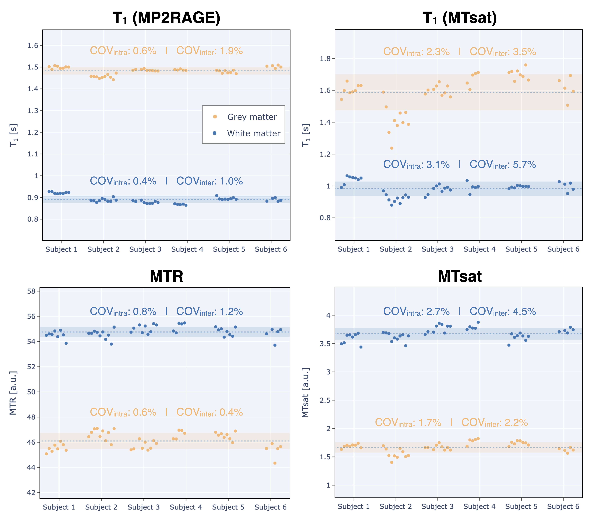
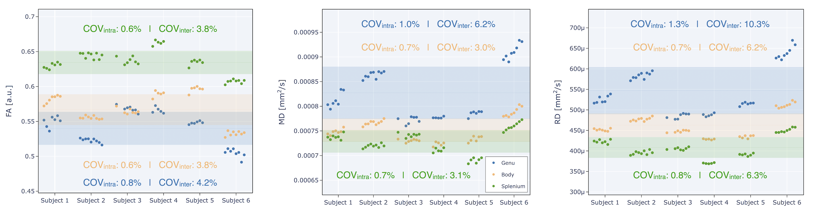
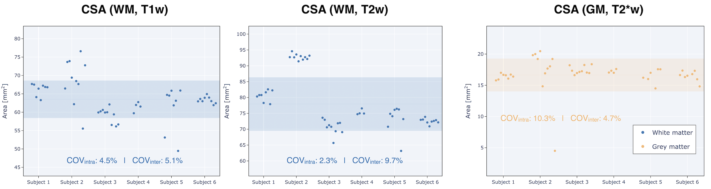
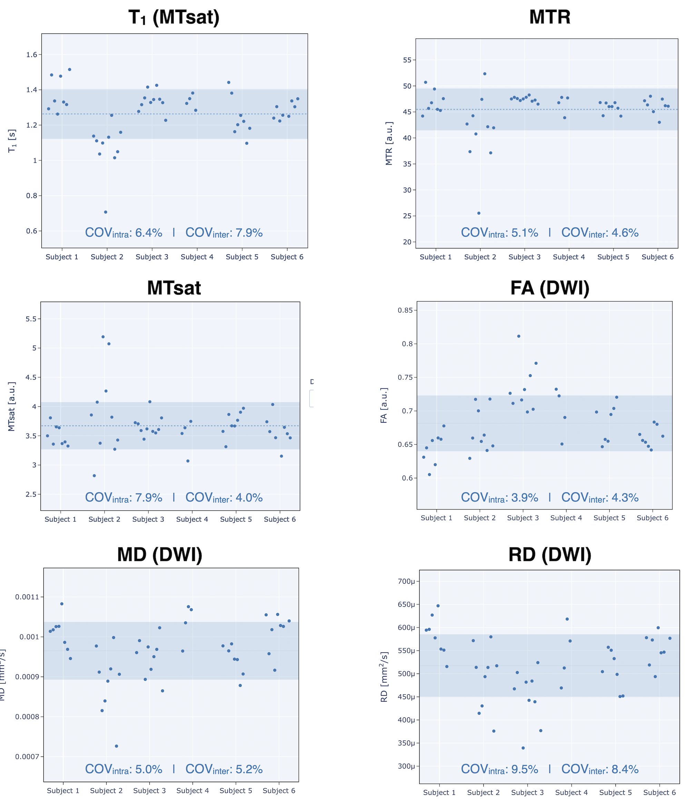
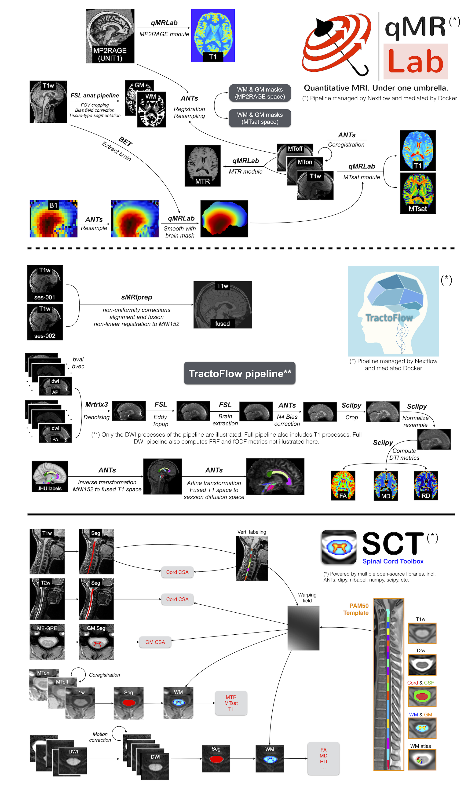

Abstract
Longitudinal stability of brain and spinal cord quantitative MRI measures
Mathieu Boudreau1,2, Agah Karakuzu, Arnaud Boré, Basile Pinsard, Kiril Zelenkovski, Eva Alonso-Ortiz, Julie Boyle, Pierre Bellec, Julien Cohen-Adad
- 1NeuroPoly Lab, Polytechnique Montréal, Montreal, Quebec, Canada
- 2Montreal Heart Institute, Montreal, Quebec, Canada
Abstract#
Quantitative MRI (qMRI) promises better specificity, accuracy, and stability relative to its clinically-used qualitative MRI counterpart. Longitudinal stability is particularly important in qMRI. The goal is to reliably quantify tissue properties that may be assessed in longitudinal clinical studies throughout disease progression or during treatment. In this work, we present the initial data release of the quantitative MRI portion of the Courtois project on neural modelling (CNeuroMod), where the brain and cervical spinal cord of six participants were scanned at regular intervals over the course of several years. This first release includes three years of data collection and up to ten sessions per participant using quantitative MRI imaging protocols (T1, magnetization transfer (MTR, MTsat), and diffusion). Coefficient of variations (COV) over this timeframe ranged between 0.6% to 2.3% (intrasubject) and 0.4% to 3.5% (intersubject) for T1/MTR/MTsat in whole-brain white matter (WM), and between 0.6% to 1.3% (intrasubject) and 3.0% to 10.3% (intersubject) for diffusion FA/MD/RD in the three corpus callosum regions. In the spine, COVs ranged between 2.3% and 4.5% (intrasubject) and 5.1% to 9.7% (intersubject) for measured spine WM cross-sectional area (CSA) across the C2 and C3 vertebral levels, and between 3.9% to 9.5% (intrasubject) and 4.0% to 8.4% (intersubject) in WM across the C2 and C5 vertebral levels for all qMRI metrics (T1, MTR, MTsat, FA, MD, RD). Results from this work show the level of stability that can be expected from qMRI protocols in the brain and spinal cord, and could help in the design of future longitudinal clinical studies.
1 | INTRODUCTION#
Quantitative MRI and the reproducibility crisis#
Conventional MRI images used clinically stem from using the MRI machine as a non-invasive medical device and not as a scientific instrument (Cercignani et al., 2018; Tofts, 1998). Medical images produced from clinical MRI protocols must be interpreted by expert readers to extract useful diagnostic information, as the images alone lack biological specificity and reproducibility, due to underlying changes in biology and the electromagnetic fields the imaging hardware generates. Quantitative MRI (qMRI) techniques (Seiberlich et al., 2020) aim to produce measurements of biological or physical properties through a series of carefully planned conventional MRI images. Quantitative maps are calculated or fit from these measured datasets, which have voxelwise values that typically have physical units associated with them, for example, spin-lattice relaxation time (T1 [s]), spin-spin relaxation time (T2 [s]), myelin water fraction (MWF [%]), magnetization transfer ratio (MTR [%]), cerebral blood flow (CBF [ml/g/min]) and diffusion (restricted diffusion coefficients [mm2/s], eg. mean diffusivity (MD) and radial diffusivity (RD)). Some qMRI techniques are highly specific to certain biological changes (eg, myelin loss (Mancini et al., 2020; Schmierer et al., 2007), cerebrovascular diseases and oxygen consumption disorders (Davis et al., 1998; Ma et al., 2016; Mazerolle et al., 2018; Wang et al., 2017), iron deficiency (Lidén et al., 2021; Ropele et al., 2011), etc.). Because these measures either implicitly or explicitly account for effects that typically are unaccounted for in clinical MRI images, in principle they should have improved stability – this is one of the hallmark-promising features of qMRI. However, in practice, the field has fallen short of living up to this high bar. Even fundamental quantitative MRI techniques have been shown to vary widely amongst methods and sites; for example, despite the fact that T1 mapping is the first quantitative MRI technique to have been developed 45 years ago (Pykett and Mansfield, 1978), modern T1 mapping techniques have not consistently shown good accuracy in measuring T1 values in the brain across different sites or techniques (Stikov et al., 2015). A lot of work has been done recently to help quantify the accuracy and improve within-vendor stability of quantitative MR measurements, such as the development of quantitative MRI calibration phantoms (Golay and Oliver-Taylor, 2022; Keenan et al., 2018; Stupic et al., 2021) and increasing integration of quantitative MRI pulse sequences as stock sequences on commercial scanners (Ma et al., 2013; Marques et al., 2010; Seiberlich et al., 2012).
Stability in qMRI: why is it needed?#
The stability of a qMRI measurement is an important characteristic to consider when designing longitudinal studies, particularly when clinical features are expected to evolve over time (eg, worsening disease, or improvement through therapeutic intervention (Oh et al., 2021)). It is also important to know the anticipated variability of these metrics to find the minimum detectable effect size in a power analysis while designing your study. Same-day test-retest studies have shown that fundamental qMRI metrics (eg, T1, T2) exhibit low intra-scanner variability in vivo (on the order of 1-2%) (Gracien et al., 2020; Lee et al., 2019). However, test-retest studies are limited in their usefulness as a stability measure because they only consist of two measurements (leading to improper standard deviation calculations) and are done during the same day (same scanner operator, same scanner conditions), which are not realistic conditions experienced during longitudinal studies. Longitudinal stability is thus important to quantify, but can be challenging due to the potential confounds from actual changes of the subject’s tissue properties over time, even from healthy volunteers. Quantitative MRI metrics in the brain have been shown to correlate with ageing through adulthood (Erramuzpe et al., 2021; Seiler et al., 2020), although changes appear to happen slowly (over decades) and thus short-term longitudinal studies (eg, 3-5 years) should in principle quantify longitudinal stability reliably.
Stability in (q)MRI: what’s been done#
Many studies have investigated the stability of morphometrics and quantitative MRI measures. A recent landmark study investigated the longitudinal stability of clinical and functional MRI metrics of a single subject’s brain measured on multiple vendors at multiple sites over the course of 15 years (73 sessions across 36 scanners) (Duchesne et al., 2019), finding poor reproducibility across MRI manufacturers for key clinical metrics (ie., white/grey matter contrast-to-noise ratio (CNR), FLAIR white matter hyperintensities volume). For qMRI metrics, there are a few longitudinal studies that have probed different aspects of their longitudinal stability. A 7-year scan-rescan brain ageing study explored the evolution of quantitative T1 values in different tissues using the variable flip angle (VFA) technique (which depends on an additional B1 map) (Gracien et al., 2017) and found T1 values were sensitive to ageing for this timespan. The stability of quantitative brain metrics when encountering MRI software and hardware upgrades was recently explored in a four time-point, seven-year repeatability and reproducibility study (Salluzzi et al., 2022), which reported the upgrades did not affect the effect size and stability of the tested MRI biomarkers. Stability has also been explored in non-brain anatomy. For spinal cord, inter-vendor variability was recently probed by a multi-center (19 sites) study using a generic quantitative MRI spinal cord imaging protocol (Cohen-Adad et al., 2021b) on a single participant over the span of one year (Cohen-Adad et al., 2021a). A test-retest quantitative MRI spine study has also been performed in two cohorts (young adult and elderly) over a ten month period (Lévy et al., 2018), with minimal detectable changes reported for T1, MTR, MTsat, and macromolecular tissue volume (MTV) quantitative MRI measures.
Study Objective and the CNeuroMod Project#
The objectives of this study are twofold. First, we aimed to develop reproducible and reusable analysis pipelines for structural qMRI of the brain and spinal cord. These pipelines are built using state-of-the-art tools in terms of pipeline management (NextFlow (Di Tommaso et al., 2017)), structural data analyses (FSL (Smith et al., 2004), ANTs (Avants et al., 2009), qMRLab (Cabana et al., 2015; Karakuzu et al., 2020), SCT (De Leener et al., 2017), etc.) and Jupyter notebooks (Beg et al., 2021) with Plotly (Plotly Technologies Inc., 2015) for presenting curated and interactive results in an integrated research object (DuPre et al., 2022), such as a companion Jupyter Book (Executable Books Community, 2020). Second, we targeted at measuring and reporting the stability of quantitative microstructure MRI measurements across multiple time points in the brain and cervical spinal cord. To do this, two sets of qMRI protocols (brain and spinal cord) were integrated within the Courtois project on neural modelling (CNeuroMod)[1] for collecting longitudinal data on healthy subjects to train and improve artificial intelligence models on brain behaviour and activity. The qMRI measurements of the brain and spinal cord fell within the “anatomical” imaging branch of the CNeuroMod project, and additional branches of data acquired include deep scanning with functional MRI, biosignals (eg, cardiac, respiration, eye tracking), and magnetoencephalography (MEG).
2 | RESULTS#
Six participants were repeatedly scanned on a 3T MRI scanner (Prisma Fit, Siemens, Erlangen, Germany) approximately four times a year (up to ten times). Custom headcases (Caseforge, Berkeley, USA) were used for each participant to minimise movements during the imaging sessions. Two sets of imaging protocols were acquired (Figure 1), one for the brain (T1w, T2w, MP2RAGE, MTsat, B1+, and diffusion) and one for the spinal cord (T1w, T2w, MTsat, and diffusion).

FIGURE 1 Overview of the structural dataset for the Courtois project on neural modelling (CNeuroMod). 6 participants were scanned up to ten times over three years. The structural protocol consists of T1w, T2w and T2*w scans to quantify brain and SC (including grey matter, GM) morphometry, and MP2RAGE, magnetization transfer (MTR and MTsat), and diffusion-weighted sequences to compute metrics sensitive to demyelination in the white matter (WM).
2.1 | Brain#
Average quantitative MRI (excluding diffusion) values for the segmented whole-brain white matter (WM) and grey matter (GM) for each subject and session are shown in Figure 2. Missing data points are from either acquired sessions that were aborted due to various scanning issues or because they were excluded after doing quality control. Note that MTR is calculated from a subset of the MTsat measurements, and B1 is not shown because it is only used as a transmit radiofrequency (RF) field correction factor for the MTsat measurement, and does not have biological specificity.
{kind=link}
FIGURE 2 Brain qMRI metrics (excluding diffusion). Each point represents the mean metric within the WM or GM for one subject and one session. Missing data points are due to unacquired sessions, the pipelines failing to produce an output, or were excluded due to quality control (see Quality Control section for more details). The intra- and inter- subject COVs for these metrics in WM and GM are shown inside each respective plot. Note: subject 4 stopped participating after their fifth session for reasons out of our control.
From Figure 2, it is evident that mean T1 values measured with the MP2RAGE pulse sequence (calculated from 2 images) generally showed less intrasubject variation than T1 values measured with MTsat (calculated from five images: three for MTsat calculation and two for B1 calculation). Intrasubject COV means for WM T1 measured using MP2RAGE was 0.6 %, which is four times lower than for T1 measured using MTsat. Intrasubject COVs for WM MTR (calculated from two images) were similar to those from MP2RAGE, and three times lower than MTsat (MTR is a subset of MTsat measurements, with two out of the five MTsat measurements being shared). Intrasubject COV standard deviations (STD) (not displayed in figure[1]) were low for all metrics in WM (< 1%). Intersubject mean COV was highest for WM T1 calculated from MTsat at 3.5%, and lowest for MTR at 0.4 %. GM intrasubject and intersubject COVs followed similar trends to those for WM, with the same order of magnitude COV mean and STD values. The very low intrasubject COVs and larger intersubject COV for T1 (MP2RAGE) is also expressed as each subject having specific mean whole-brain WM and GM T1 values distinct from each other, and that these values were stable longitudinally (Figure 2); this can also be seen to a lesser extent for T1 (MTsat) and MTsat, but not for MTR which had intrasubject COVs on the order or higher than the intersubject COVs.
{kind=link}
FIGURE 3 The mean diffusion metrics (FA, MD, and RD) for each acquired session are shown for three atlas-based regions of the corpus callosum (genu in blue, body in yellow, splenium in green) of each subject.
Figure 3 displays the three calculated diffusion metrics (fractional anisotropy: FA, mean diffusivity: MD, and radial diffusivity: RD) within the three corpus callosum regions (genu, body, splenium). All three metrics exhibited high intersubject mean COVs (> 3%) and low intrasubject COV means (< 1.3%). The lowest intrasubject COV means are reported for FA in the body and splenium (0.6%), and the lowest intersubject mean COV was reported in the body and splenium for MD (3.0% and 3.1%, respectively). Intrasubject COV standard deviations (STD) (not displayed in figure) were low for all metrics and regions (< 0.6%), and FA in the splenium had the lowest value (0.1%). The substantially higher intersubject mean COVs than intrasubject mean COVs also indicates, like for the T1 (MP2RAGE) earlier, that each subject and region had specific diffusion metric values which were distinct from each other and were relatively stable as can be seen in Figure 3.
2.2 | Spinal cord#
Figure 4 displays the results for the spinal cord cross-sectional area calculated for WM (using T1w and T2w images) and GM (using T2*w images). WM cross-sectional area (CSA) across the C2 and C3 vertebral levels calculated with T2w images resulted in intrasubject COVs of 2.3%, half of that found using T1w images (4.5%). For intersubject COVs, the trend is inverted; T2w had nearly double the intersubject COVs value (9.1 %) than T1w (5.2 %). The intrasubject standard deviations were on the order of the means (3.3% for WM using T1w, 1.7% for WM using T2w, and 10.4% for GM using T2*w). We notice a particularly high COV for CSA (WM, T1w) for subject 2, which is due to high subject motion, resulting in unreliable spinal cord segmentation. As mentioned in the methods, the analysis pipeline was fully automatic, hence no mask was manually edited, as to not introduce rater-bias in the intra- and inter-subject statistics.
{kind=link}
FIGURE 4 Spinal cord cross-sectional area (CSA) for each acquired subject and session in WM (using either the T1w or T2w images) and in GM (using the T2*w images).
Figure 5 shows the scatter plots of all qMRI metric means calculated in the WM across the C2 and C5 vertebral levels of the spinal cord. As also observed in the brain, MTR resulted in lower intrasubject COV means (5.1%) than MTsat (7.9%, which is a superset of the MTR measurements plus one additional no-MT SPGR measurement and a B1 map). T1 had the better mean intersubject COV (7.9%) relative to its two concomitant metrics (MTR - 4.6%, MTsat - 4.0 %), demonstrating unique mean quantitative T1 values in WM for the set of subjects for this timeframe. For diffusion, FA resulted in the lowest intrasubject COV means (3.9%), and MD and RD were substantially higher (5-9%) in contrast to the observations in the brain (0.6-1.3%).
{kind=link}
FIGURE 5 Spinal cord qMRI metrics (T1, MTR, MTsat, FA, MD, RD). Each point represents the mean metric within the WM across C2 and C5 levels, for one subject and one session.
3 | DISCUSSION#
Longitudinal stability of quantitative MRI measures is an important feature for clinical and research studies that intend to use the MRI scanner as a scientific instrument. Here, we report on the stability of a fundamental MR parameter (T1) and of microstructural biomarkers (MTR, MTsat, diffusion) in the central nervous system (brain and spinal cord) over the course of three years at a single imaging site. The concept of the “stability” of quantitative MR measures must be considered carefully; long-term biological changes in brain tissue also occur naturally in healthy people due to macro- and microstructural effects associated with normal ageing (MacDonald and Pike, 2021). Because this study was limited to three years and only investigated adults in mid-adulthood (ages 31 to 47 at initial scan date), the naturally-occurring effects of ageing in the brain (eg, myelin generation/degradation, ventricular enlargement, etc) are expected to occur slowly during this timespan (Ge et al., 2002; Hagiwara et al., 2021; Steen et al., 1995). This work is also a small piece of a larger ongoing project, CNeuroMod, and this long-term database of quantitative MRI measurements may be valuable information to incorporate in deep learning training models of other longitudinal measurements (eg, fMRI, MEG) to account for confounding changes in the brains of these subjects.
Stability of qMRI measures#
The reported intrasubject COV means indicate good stability of all quantitative metrics measured in the brain (< 2.3 % in WM, < 3.1 % in GM) throughout the ten structural sessions acquired over three years. Several metrics (T1 (MP2RAGE) and MTsat in Figure 2 and FA/MD/RD in Figure 3), also had higher intersubject mean COVs than intrasubject COV means, which suggests that the quantitative metrics were specific to the individuals and are stable enough to monitor longitudinal differences. The qMRI metrics that exhibited the lowest intrasubject COVs (MTR and T1 (MP2RAGE)) were also the metrics that used the lowest number of raw MRI images to calculate the metrics (two, versus three plus a B1 map for MTsat and T1 (MTsat)), suggesting that quantitative MRI metric stability may degrade if they need substantially more measurements than simpler alternatives (MTR and T1 (MP2RAGE), calculated from two images). Another potential reason for the improved stability is that MP2RAGE is inherently optimised for reduced sensitivity to B1 (Marques et al., 2010), and future work should explore if quantitative techniques with good robustness against field inhomogeneities provide better long term stability than techniques necessitating additional measurements to correct for these effects. The longitudinal stability of a different implementation of T1 mapping (variable flip angle: VFA, which uses two measurements plus a B1 map) was reported in a healthy cohort at two timepoints acquired seven years apart (Gracien et al., 2017). Good stability was reported in WM T1 values, as well as a decrease in T1 values in cortical GM, the magnitude of which was proportional to the subject’s age. The age range of the study was 51-77 at the initial time point, thus a higher overall cohort age than the CNeuroMod cohort. Another recent longitudinal study (York et al., 2022) investigated the longitudinal trends of quantitative MRI myelin measures (MTR, MTsat, and diffusion) in a cohort of both healthy and MS patients. However, only the MS cohort was investigated longitudinally over one year; the healthy cohort was a scan-rescan over two weeks. The longitudinal stability measures we reported in a healthy cohort (and in particular our open-source datasets) could be used to further support studies such as this one. In recent months, another longitudinal study (Salluzzi et al., 2022) investigated the short-term repeatability and long-term reproducibility in a healthy cohort over a 5 year interval with a different set of quantitative MRI metrics (T2/T2*, quantitative susceptibility, cerebral blood flow, and diffusivity). Their work, though investigating mostly different metrics, is complementary to our study in that its main objective was to assess the potential impacts of both software and hardware MRI upgrades. They reported intrasubject COVs on the order of 1% or less for diffusion metrics (FA/MD/RD) in the three corpus callosum regions, in agreement with the observations reported in our study.
Spinal cord CSA had an intrasubject COV mean of 4.5 % and 2.3 % for CSA calculated from T1w and T2w scans, respectively. The almost twice smaller intrasubject COV for CSA computed on the T2w scan is likely due to the higher robustness to subject motion and/or spinal cord pulsatile motion for the T2w fast spin echo sequence vs. the T1w MPRAGE. This is consistent with a recent study (Bautin and Cohen-Adad, 2021), where intrasubject CSA COVs where 0.8% for T1w images and 0.57% for T2w images. Note that the Bautin et al. study was based on in-silico generation of scan-rescan using random affine transformations, hence the variability was highly under-estimated compared to the present study. In the present study, the reported COVs are likely closer to a realistic longitudinal scenario and suggest good long term stability for this quantitative metric in the spinal cord, and that T2w is the better choice for CSA quantification stability. In another related multi-site and multi-manufacturer study (Cohen-Adad et al., 2021a), were one subject was scanned in 19 different imaging centers over a period of 77 days,, they reported intra-site COVs for MTR and MTsat were below 3.6% and 11% respectively, on the order of our reported longitudinally measured values (5.1% and 7.9%). Intrasite FA COVs were reported on the order of or below 5.9%, higher than our mean longitudinal intrasubject COV value of 3.9%. These overall agreements between a multi-center snapshot in time and a single-centre longitudinal study provide encouraging evidence for the longitudinal stability when imaging the spinal cord.
Limitations#
Some limitations related to this study are important to highlight. Foremost, all measurements in this work were done on a single MRI scanner, and thus a single MRI vendor. Recent work (Cohen-Adad, 2020; Cohen-Adad et al., 2021b) done in the spinal cord suggests that while quantitative MR values differ across vendors, the COVs compare well. Multi-vendor harmonisation can only go so far; key differences in proprietary vendor pulse sequence implementations will always introduce differences out of the control of the user-researchers. However there is a lot of recent work on open-source pulse sequence frameworks (Cordes et al., 2020; Karakuzu et al., 2022b; Layton et al., 2017) aiming to minimise these differences and give more control to the user researchers that may provide a solution to this limitation. Alternatively, inter-vendor biases can be accounted for in the statistics analysis step (Hagiwara et al., 2019), or by using a standard system phantom (Keenan et al., 2021). Our work reported on the longitudinal stability of mostly coarse regions-of-interest in the brain and spinal cord (whole-brain WM and GM mean values, in-plane WM and GM spinal cord means), except for the brain diffusion metrics which were averaged for the three corpus callosum regions (as was similarly done in (Salluzzi et al., 2022)). More granular masking methods exist for both the brain and spinal cord (eg. white & grey matter (Desikan et al., 2006; Lévy et al., 2015; Oishi et al., 2009), tractometry (Catani and Thiebaut de Schotten, 2008)), and may be explored in the future. Although outside of the scope of this current study, the stability of quantitative morphometry in the brain (eg. cortical thickness) could also be explored and compared against the quantitative MRI metrics using this open dataset.
4 | METHODS#
Data acquisition#
Six healthy participants (three females) were recruited in 2018 (aged 31 to 47 at initial scan date) and consented to be scanned regularly as part of the on-going CNeuroMod project (Boyle et al., 2020). The anatomical imaging protocol is run on each participant at a rate of approximately four times / year, for three years. The participation of the subject labelled number 4 was unable to continue participating after their fifth session, and other participants occasionally were unable to attend their scheduled scans thus the total number of scans per participant varied. All imaging sessions were performed at the same site on a 3.0 T whole-body MRI scanner (Prisma Fit, Siemens, Erlangen, Germany) with a 64-channel head/neck receive coil and 2-channel body transmit coil. Custom headcases (Caseforge, Berkeley, USA) were used for each participant to minimise movements during the imaging sessions; inter-scan motion is particularly important to be minimised for quantitative MRI as the actual fields in the imaging volume change with different anatomical positioning and cannot be easily corrected for using image registration techniques (Balbastre et al., 2022; Papp et al., 2016). Up to ten imaging sessions were acquired in total, and the same imaging protocol was used for each subject and session. Two sets of imaging protocols were implemented, one for the brain and one for the spinal cord, the details of which are summarised next, but are also documented on the CNeuroMod project documentation[1], including the Siemens MRI exam card PDFs exported from the scanner[2].
Brain imaging protocol#
The brain imaging protocol (Figure 1, top) consisted of the following set of MRI measurements: T1-weighted, T2-weighted, diffusion, MP2RAGE, B1 mapping, and magnetization transfer (MT) saturation. The T1-weighted image consisted of a 3D MPRAGE acquisition using a repetition time (TR) = 2.4 s, echo time (TE) = 2.2 ms, excitation flip angle (FA) = 8 deg, 0.8 mm isotropic resolution, and parallel imaging acceleration factor (R) = 2. The T2-weighted pulse sequence was a 3D fast spin-echo (FSE) acquisition with TR = 3.2 s, TE = 563 ms, 0.8 mm isotropic resolution, and R = 2. The diffusion-weighted protocol used a 2D axial EPI sequence (TR = 2.3 s, TE = 82 ms, FA = 78 deg, 2 mm3 isotropic resolution, simultaneous multi-slice (SMS) factor of 3, two-shells, minimum b-value = 1500 s/mm2, maximum b-value = 3000 s/mm2), and was acquired twice using either P-A or A-P phase-encoding directions, to correct for susceptibility-induced distortion. The MP2RAGE 3D protocol produced two images with different inversion times (TI) = 700 ms and 1500ms, TR = 4s, TE = 1.51 ms FA = 7 deg and 5 deg for each TI respectively, 1.2 mm isotropic resolution, and R = 2. B1 maps were acquired using the default Siemens B1 mapping sequence based on a gradient echo sequence with ultrafast turbo-FLASH readout (6mm isotropic resolution) (Chung et al., 2010). Lastly, the MT saturation protocol consists of a set of three 3D spoiled gradient echo images: an MT-weighted (MTw) image (TR = 28 ms, TE = 3.3 ms, FA = 6 deg, 1.5 mm isotropic resolution, R = 2, and a Gaussian-shaped MT preparation pulse with an off-resonance frequency = 1.2 kHz), a proton-density-weighted (PDw) image (same protocol as the MTw, with the omission of the MT preparation pulse), and a T1-weighted (T1w) image (same protocol as the PDw, except TR = 18 ms and FA = 20 deg).
Spinal cord imaging protocol#
The spinal cord imaging protocol (Figure 1, bottom) consisted of the following set of MRI measurements: T1-weighted, T2-weighted, diffusion, and magnetization transfer (MT) saturation. The T1-weighted image consisted of a 3D MPRAGE acquisition with TR = 2 s, TE = 3.72 ms, FA = 9 deg, 1 mm isotropic resolution, and R = 2. The T2-weighted pulse sequence was a 3D fast spin-echo (FSE) acquisition with TR = 1.5 s, TE = 120 ms, FA = 120 deg, 0.8 mm isotropic resolution, and R = 3. The diffusion-weighted protocol used a 2D axial EPI sequence that was cardiac-gated with a pulse oximeter and TR ~ 620 ms, TE = 60 ms, 0.9 mm in-plane resolution, 5 mm slice resolution, phase encoding in the A-P direction, and a maximum b-value of 800 s/mm2). Lastly, the MT saturation protocol consisted of an MTw acquisition (TR = 35 ms, TE = 3.13 ms, FA = 9 deg, 0.9 mm2 in-plane resolution, 0.5 mm slice resolution, R = 2, and a Gaussian-shaped MT preparation pulse with an off-resonance frequency = 1.2 kHz), a proton-density-weighted (PDw) image (same protocol as the MTw, with the omission of the MT preparation pulse), and a T1-weighted (T1w) image (same protocol as the PDw, except TR = 15 ms and FA = 15 deg).
Data preparation#
All datasets acquired within the CNeuroMod project were prepared with the intention to be shared. Data were anonymized and defaced by masking out face, teeth, and ears. Datasets were prepared and organised in the BIDS (Brain Imaging Data Structure) format (Gorgolewski et al., 2016). Quantitative image acquisitions were prepared according to the BEP001 specification (Karakuzu et al., 2022a), and spinal cord data used the “bp-cspine” tag as proposed in BEP025 to distinguish against the brain datasets for the same subject. Datasets were managed using Datalad (Halchenko et al., 2021) and git-annex in a databank; access to this databank is made available through the CNeuroMod website[1]. Session numbers in the database that are missing for some subjects are omitted datasets from scanning sessions that were aborted due to various scanning issues. sMRIprep (Esteban et al., 2022) was executed on the T1w brain scans from the first two sessions of each subject, which were later published on GitHub using git-annex as part of the CNeuroMod project. These outputs were used solely for the brain diffusion pipeline.
Analysis pipeline#
Two separate post-processing and analysis pipelines were developed for the brain and spinal cord data. Figure 6 shows an overview of both pipelines with the outcome metrics.
The brain pipelines were managed using Nextflow (Di Tommaso et al., 2017), a container management tool for data processing pipelines. Two Docker container images were prebuilt and used for this pipeline: dockerhub.io/qmrlab/antsfl:latest (digest: 597de3e6e1aa) and dockerhub.io/qmrlab/minimal: v2.5.0b (digest: 40270330e7b5). Image registration was performed using the Advanced Normalization Tools (ANTS; version 2.1.0) (Avants et al., 2009). Brain extraction was done using the brain extraction tool (BET) tool in the FMRIB Software Library (FSL; version 5.0) (Smith, 2002; Smith et al., 2004), and whole-brain WM and GM segmentation were done using the FMRIB's Automated Segmentation Tool (FAST) in FSL (Zhang et al., 2001). With the exception of diffusion, for all quantitative MRI methods the core data fitting algorithms used in this pipeline are from the open-source qMRLab software (version tag 2.5.0b) (Cabana et al., 2015; Karakuzu et al., 2020). For diffusion, the TractoFlow pipeline (version 2.4.1) was used (Theaud et al., 2020), which uses DIPY (Garyfallidis et al., 2014) and MRtrix3 (Tournier et al., 2019) for the core diffusion processing functionalities, and FSL and ANTs for the image processing tools. The diffusion pipeline consists of a denoising step (MRtrix3), TOPUP (using the two phase encoding directions diffusion images) and eddy current corrections (FSL), DTIs (DIPY), brain tissue segmentation (ANTs), and lastly tractography maps (Cousineau et al., 2017); the full processing diagram is shown in Figure 6. DTI metrics were calculated using the 1500 s/mm2 b-value shell. In addition to the diffusion images as inputs, TractoFlow also used the average of the T1w structural images of the first two sessions (for each subject) that was registered to the MNI152 atlas, which is the output of another standard pipeline, sMRIprep (Esteban et al., 2022), that consists[1] of intensity non-uniformity corrections, alignment and fusion of the images, skull stripping, and non-linear registration to the template. The three regions-of-interests (ROIs) of the corpus callosum (genu/body/splenium) were extracted using the John Hopkins University ICBM-DTI-81 WM labels provided by FSL. The labels were first transformed from MNI152 space to the average T1w space (with transformations files available from the sMRIprep outputs[2]), and then from the average T1w space to the diffusion space using the affine matrix files provided as outputs of TractoFlow.
For the spinal cord data, the pipeline was developed in a shell script[1] using all tools available through the Spinal Cord Toolbox (SCT) v5.6 (De Leener et al., 2017). The script was run through all the available subjects and sessions using the pipeline management tool sct_run_batch. The SC was segmented on T2w images using sct_deepseg_sc (Gros et al., 2019), then vertebral levels were identified (Ullmann et al., 2014). The SC was then registered to the adult PAM50 template (De Leener et al., 2018). T1w images were analysed similarly: the SC was segmented and then registered to the PAM50 template using the transformation T2w-PAM50 calculated earlier. The ME-GRE images were analysed using sct_deepseg_gm (Perone et al., 2018) to segment the grey matter. MT images were processed as follows. The SC was segmented on the GRE-MT1 scan, followed by registration to the PAM50 template via the T2w-PAM50 transformation. GRE-MT0 and GRE-T1w scans were then registered to the GRE-MT1 scans. Magnetization transfer ratio (MTR) and MTsat were computed. DWI images were motion-corrected using a mask centred around the SC for more robustness, then registered to the PAM50 template using the initial transformation. DTI metrics were computed using sct_compute_dti (powered by DIPY (Garyfallidis et al., 2014). The computed metrics are as follows: SC CSA averaged between C2-C3 levels from the T1w and T2w scans (using sct_process_segmentation), GM CSA averaged between C3-C4 from the ME-GRE scan, MTR, MTsat, T1 and DTI metrics extracted in the WM between levels C2-C5.
{kind=link}
FIGURE 6 Overview of the three analysis pipelines used in this project: qMRLab (top row), Tractoflow (middle row), Spinal Cord Toolbox (bottom row). The human datasets were processed using NextFlow-based pipelines (qMRLab for qMRI processing, and Tractoflow for diffusion processing), whereas spine datasets used a bash script-based pipeline using the Spinal Cord Toolbox software.
Quality control#
For brain qMRI data processing (excluding diffusion), quality assurance was done manually with the assistance of the Nextflow log, which provides a report on success/failure of each processing step for all subjects and sessions. The resulting maps and masks were also visually verified manually, which resulted in some subsequent corrections to how the tissue masks were calculated[1] and the removal of parts of the MTsat acquisition volume due to slab profile effects[2]. Five data points were omitted due to missing B1 maps in the CNeuroMod database for these subject’s sessions: sub-03_ses-003, sub-06_ses-001, sub-06_ses-002, sub-06_ses-003, sub-06_ses-005.
For brain diffusion data processing, a report was generated from the TractoFlow tool dmriqc_flow (v 0.2.0 - (Theaud and Descoteaux, 2022)). Each step of the pipeline has been manually validated without any reported issues. Two sessions were excluded due to corrupted initial acquisitions (sub-03_ses-002, sub-03_ses-003)For the spinal cord data processing pipeline, a QC report showing various steps of the analysis (segmentation, vertebral labelling, registration) was generated and made publicly available on the GitHub project repository (https://github.com/courtois-neuromod/anat-processing, release version r20220804). Following expert readings, some data points were excluded due to factors such as excessive motion (sub-05_ses-007 [T2w]), poor shimming (sub-03_ses-010 [T1w] and sub-05_ses-007 [T1w]), and incorrect volume placement or incorrect b-values (sub-02_ses-001 [DWI], sub-03_ses-003 [DWI], sub-06_ses-008): details are listed in GitHub issues (https://github.com/courtois-neuromod/anat-processing/issues). In addition, the pipeline failed to produce an output for two data points (sub-04_ses-001, sub-06_ses-005).
ACKNOWLEDGEMENT#
The Courtois project on neural modelling was made possible by a generous donation from the Courtois foundation. The Courtois NeuroMod team is based at “Centre de Recherche de l’Institut Universitaire de Gériatrie de Montréal”, with several other institutions involved. See the CNeuromod documentation for an up-to-date list of contributors (https://docs.cneuromod.ca). This study was also funded by the Canada Research Chair in Quantitative Magnetic Resonance Imaging [950-230815], the Canadian Institute of Health Research [CIHR FDN-143263], the Canada Foundation for Innovation [32454, 34824], the Fonds de Recherche du Québec - Santé [322736], the Natural Sciences and Engineering Research Council of Canada [RGPIN-2019-07244], the Canada First Research Excellence Fund (IVADO and TransMedTech), and the Mila - Tech Transfer Funding Program.
DATA AVAILABILITY STATEMENT#
In the aim of better reproducibility and transparency in research, all the data, processing pipelines, containers, and analysis code have been made available online. The anonymized and defaced datasets are in BIDS format and managed using Datalad and git-annex in a GitHub repository, https://github.com/courtois-neuromod/anat, and the data itself is hosted on an self-hosted S3 server. To request access to this data, we invite researchers to fill out an application form on our website https://www.cneuromod.ca/access/access/. The brain quantitative MRI processing pipeline was written in Nextflow (brain) and shell (spine) and are available in this repository: https://github.com/courtois-neuromod/anat-processing. The TractoFlow pipeline is built using open-source tools and is available on GitHub: https://github.com/scilus/tractoflow combined with the container image on Dockerhub: dockerhub.io/scilus/scilus:1.4.2 (digest: 25415e45ea7f, https://hub.docker.com/repository/docker/scilus/scilus) . The qMRI brain pipeline used two Docker containers which have been made available as saved container images on Dockerhub: dockerhub.io/qmrlab/antsfl:latest (digest: 597de3e6e1aa, https://hub.docker.com/repository/docker/qmrlab/antsfsl) and dockerhub.io/qmrlab/minimal: v2.5.0b (digest: 40270330e7b5, https://hub.docker.com/repository/docker/qmrlab/minimal). The condensed outputs of these pipelines (eg, masked and averaged values for each tissue) are shared in GitHub releases of this repository, which can be found here: https://github.com/courtois-neuromod/anat-processing/releases/. The data figures and tables in this article were produced using analysis code integrated in an interative Jupyter Book and powered by Plotly, which is available here, https://courtois-neuromod.github.io/anat-processing-book/, and the code repository for this book is https://github.com/courtois-neuromod/anat-processing-book.
REFERENCES#
Avants, Tustison, Song. 2009. Advanced normalization tools (ANTS). Insight J.
Balbastre Y, Aghaeifar A, Corbin N, Brudfors M, Ashburner J, Callaghan MF. 2022. Correcting inter‐scan motion artifacts in quantitative R 1 mapping at 7T. Magnetic Resonance in Medicine. doi:10.1002/mrm.29216
Bautin P, Cohen-Adad J. 2021. Minimum detectable spinal cord atrophy with automatic segmentation: Investigations using an open-access dataset of healthy participants. Neuroimage Clin 32:102849.
Beg, Taka, Kluyver, Konovalov, Ragan-Kelley, Thiery, Fangohr. 2021. Using Jupyter for Reproducible Scientific Workflows. https://www.computer.org › csdl › magazine › 2021/02https://www.computer.org › csdl › magazine › 2021/02 23:36–46.
Boyle JA, Pinsard B, Boukhdhir A, Belleville S, Brambatti S, Chen J, Cohen-Adad J, Cyr A, Fuente A, Rainville P, Bellec P. 2020. The Courtois project on neuronal modelling - first data release. Presented at the Annual Meeting of the Organization for Human Brain Mapping. Virtual Conference. p. 1939.
Cabana J-F, Gu Y, Boudreau M, Levesque IR, Atchia Y, Sled JG, Narayanan S, Arnold DL, Pike GB, Cohen-Adad J, Duval T, Vuong M-T,
Stikov N. 2015. Quantitative magnetization transfer imagingmadeeasy with qMTLab: Software for data simulation, analysis, and visualization. Concepts Magn Reson Part A Bridg Educ Res 44A:263–277.
Catani M, Thiebaut de Schotten M. 2008. A diffusion tensor imaging tractography atlas for virtual in vivo dissections. Cortex 44:1105–1132.
Cercignani M, Dowell NG, Tofts PS. 2018. Quantitative MRI of the Brain: Principles of Physical Measurement, Second edition. CRC Press.
Chung S, Kim D, Breton E, Axel L. 2010. Rapid B1+ mapping using a preconditioning RF pulse with TurboFLASH readout. Magn Reson Med 64:439–446.
Cohen-Adad J. 2020. Spine Generic Public Database (Single Subject). doi:10.5281/zenodo.4299148
Cohen-Adad J, Alonso-Ortiz E, Abramovic M, Arneitz C, Atcheson N, Barlow L, Barry RL, Barth M, Battiston M, Büchel C, Budde M, Callot V, Combes AJE, De Leener B, Descoteaux M, de Sousa PL, Dostál M, Doyon J, Dvorak A, Eippert F, Epperson KR, Epperson KS, Freund P, Finsterbusch J, Foias A, Fratini M, Fukunaga I, Gandini Wheeler-Kingshott CAM, Germani G, Gilbert G, Giove F, Gros C, Grussu F, Hagiwara A, Henry P-G, Horák T, Hori M, Joers J, Kamiya K, Karbasforoushan H, Keřkovský M, Khatibi A, Kim J-W, Kinany N, Kitzler HH, Kolind S, Kong Y, Kudlička P, Kuntke P, Kurniawan ND, Kusmia S, Labounek R, Laganà MM, Laule C, Law CS, Lenglet C, Leutritz T, Liu Y, Llufriu S, Mackey S, Martinez-Heras E, Mattera L, Nestrasil I, O’Grady KP, Papinutto N, Papp D, Pareto D, Parrish TB, Pichiecchio A, Prados F, Rovira À, Ruitenberg MJ, Samson RS, Savini G, Seif M, Seifert AC, Smith AK, Smith SA, Smith ZA, Solana E, Suzuki Y, Tackley G, Tinnermann A, Valošek J, Van De Ville D, Yiannakas MC, Weber KA Ii, Weiskopf N, Wise RG, Wyss PO, Xu J. 2021a. Open-access quantitative MRI data of the spinal cord and reproducibility across participants, sites and manufacturers. Sci Data 8:219. Cohen-Adad J, Alonso-Ortiz E, Abramovic M, Arneitz C, Atcheson N, Barlow L, Barry RL, Barth M, Battiston M, Büchel C, Budde M, Callot V, Combes AJE, De Leener B, Descoteaux M, de Sousa PL, Dostál M, Doyon J, Dvorak A, Eippert F, Epperson KR, Epperson KS, Freund P, Finsterbusch J, Foias A, Fratini M, Fukunaga I, Wheeler-Kingshott CAMG, Germani G, Gilbert G, Giove F, Gros C, Grussu F, Hagiwara A, Henry P-G, Horák T, Hori M, Joers J, Kamiya K, Karbasforoushan H, Keřkovský M, Khatibi A, Kim J-W, Kinany N, Kitzler H, Kolind S, Kong Y, Kudlička P, Kuntke P, Kurniawan ND, Kusmia S, Labounek R, Laganà MM, Laule C, Law CS, Lenglet C, Leutritz T, Liu Y, Llufriu S, Mackey S, Martinez-Heras E, Mattera L, Nestrasil I, O’Grady KP, Papinutto N, Papp D, Pareto D, Parrish TB, Pichiecchio A, Prados F, Rovira À, Ruitenberg MJ, Samson RS, Savini G, Seif M, Seifert AC, Smith AK, Smith SA, Smith ZA, Solana E, Suzuki Y, Tackley G, Tinnermann A, Valošek J, Van De Ville D, Yiannakas MC, Weber KA, Weiskopf N, Wise RG, Wyss PO, Xu J. 2021b. Generic acquisition protocol for quantitative MRI of the spinal cord. Nat Protoc 16:4611–4632.
Cordes C, Konstandin S, Porter D, Günther M. 2020. Portable and platform-independent MR pulse sequence programs. Magn Reson Med 83:1277–1290.
Cousineau M, Jodoin P-M, Garyfallidis E, Côté M-A, Morency FC, Rozanski V, Grand’Maison M, Bedell BJ, Descoteaux M. 2017. A test-retest study on Parkinson’s PPMI dataset yields statistically significant white matter fascicles. NeuroImage: Clinical 16:222–233.
Davis TL, Kwong KK, Weisskoff RM, Rosen BR. 1998. Calibrated functional MRI: Mapping the dynamics of oxidative metabolism. Proceedings of the National Academy of Sciences 95:1834–1839.
De Leener B, Fonov VS, Collins DL, Callot V, Stikov N, Cohen-Adad J. 2018. PAM50: Unbiased multimodal template of the brainstem and spinal cord aligned with the ICBM152 space. Neuroimage 165:170–179.
De Leener B, Lévy S, Dupont SM, Fonov VS, Stikov N, Louis Collins D, Callot V, Cohen-Adad J. 2017. SCT: Spinal Cord Toolbox, an open-source software for processing spinal cord MRI data. Neuroimage 145:24–43.
Desikan RS, Ségonne F, Fischl B, Quinn BT, Dickerson BC, Blacker D, Buckner RL, Dale AM, Maguire RP, Hyman BT, Albert MS, Killiany RJ. 2006. An automated labeling system for subdividing the human cerebral cortex on MRI scans into gyral based regions of interest. Neuroimage 31:968–980.
Di Tommaso P, Chatzou M, Floden EW, Barja PP, Palumbo E, Notredame C. 2017. Nextflow enables reproducible computational workflows. Nat Biotechnol 35:316–319.
Duchesne S, Dieumegarde L, Chouinard I, Farokhian F, Badhwar A, Bellec P, Tétreault P, Descoteaux M, Boré A, Houde J-C, Beaulieu C, Potvin O. 2019. Structural and functional multi-platform MRI series of a single human volunteer over more than fifteen years. Scientific Data 6:1–9.
DuPre E, Holdgraf C, Karakuzu A, Tetrel L, Bellec P, Stikov N, Poline J-B. 2022. Beyond advertising: New infrastructures for publishing integrated research objects. PLoS Comput Biol 18:e1009651.
Erramuzpe A, Schurr R, Yeatman JD, Gotlib IH, Sacchet MD, Travis KE, Feldman HM, Mezer AA. 2021. A Comparison of Quantitative R1 and Cortical Thickness in Identifying Age, Lifespan Dynamics, and Disease States of the Human Cortex. Cereb Cortex 31:1211–1226.
Esteban O, Markiewicz CJ, Blair R, Poldrack RA, Gorgolewski KJ. 2022. sMRIPrep: Structural MRI PREProcessing workflows. doi:10.5281/zenodo.7383275
Executable Books Community. 2020. Jupyter Book. doi:10.5281/zenodo.4539666
Garyfallidis E, Brett M, Amirbekian B, Rokem A, van der Walt S, Descoteaux M, Nimmo-Smith I, Dipy Contributors. 2014. Dipy, a library for the analysis of diffusion MRI data. Front Neuroinform 8:8.
Ge Y, Grossman RI, Babb JS, Rabin ML, Mannon LJ, Kolson DL. 2002. Age-related total gray matter and white matter changes in normal adult brain. Part II: quantitative magnetization transfer ratio histogram analysis. AJNR Am J Neuroradiol 23:1334–1341.
Golay X, Oliver-Taylor A. 2022. Phantom for Multi-Parametric Calibration in Magnetic Resonance Imaging. US Patent. 11,391,804 B2.
Gorgolewski KJ, Auer T, Calhoun VD, Craddock RC, Das S, Duff EP, Flandin G, Ghosh SS, Glatard T, Halchenko YO, Handwerker DA, Hanke M, Keator D, Li X, Michael Z, Maumet C, Nichols BN, Nichols TE, Pellman J, Poline J-B, Rokem A, Schaefer G, Sochat V, Triplett W, Turner JA, Varoquaux G, Poldrack RA. 2016. The brain imaging data structure, a format for organizing and describing outputs of neuroimaging experiments. Scientific Data 3:1–9.
Gracien R-M, Maiworm M, Brüche N, Shrestha M, Nöth U, Hattingen E, Wagner M, Deichmann R. 2020. How stable is quantitative MRI? - Assessment of intra- and inter-scanner-model reproducibility using identical acquisition sequences and data analysis programs. Neuroimage 207:116364.
Gracien R-M, Nürnberger L, Hok P, Hof S-M, Reitz SC, Rüb U, Steinmetz H, Hilker-Roggendorf R, Klein JC, Deichmann R, Baudrexel S. 2017. Evaluation of brain ageing: a quantitative longitudinal MRI study over 7 years. Eur Radiol 27:1568–1576.
Gros C, De Leener B, Badji A, Maranzano J, Eden D, Dupont SM, Talbott J, Zhuoquiong R, Liu Y, Granberg T, Ouellette R, Tachibana Y, Hori M, Kamiya K, Chougar L, Stawiarz L, Hillert J, Bannier E, Kerbrat A, Edan G, Labauge P, Callot V, Pelletier J, Audoin B, Rasoanandrianina H, Brisset J-C, Valsasina P, Rocca MA, Filippi M, Bakshi R, Tauhid S, Prados F, Yiannakas M, Kearney H, Ciccarelli O, Smith S, Treaba CA, Mainero C, Lefeuvre J, Reich DS, Nair G, Auclair V, McLaren DG, Martin AR, Fehlings MG, Vahdat S, Khatibi A, Doyon J, Shepherd T, Charlson E, Narayanan S, Cohen-Adad J. 2019. Automatic segmentation of the spinal cord and intramedullary multiple sclerosis lesions with convolutional neural networks. Neuroimage 184:901–915. Hagiwara A, Fujimoto K, Kamagata K, Murata S, Irie R, Kaga H, Someya Y, Andica C, Fujita S, Kato S, Fukunaga I, Wada A, Hori M, Tamura Y, Kawamori R, Watada H, Aoki S. 2021. Age-Related Changes in Relaxation Times, Proton Density, Myelin, and Tissue Volumes in Adult Brain Analyzed by 2-Dimensional Quantitative Synthetic Magnetic Resonance Imaging. Invest Radiol 56:163. Hagiwara A, Hori M, Cohen-Adad J, Nakazawa M, Suzuki Y, Kasahara A, Horita M, Haruyama T, Andica C, Maekawa T, Kamagata K, Kumamaru KK, Abe O, Aoki S. 2019. Linearity, Bias, Intrascanner Repeatability, and Interscanner Reproducibility of Quantitative Multidynamic Multiecho Sequence for Rapid Simultaneous Relaxometry at 3 T: A Validation Study With a Standardized Phantom and Healthy Controls. Invest Radiol 54:39–47.
Halchenko Y, Meyer K, Poldrack B, Solanky D, Wagner A, Gors J, MacFarlane D, Pustina D, Sochat V, Ghosh S, Mönch C, Markiewicz C, Waite L, Shlyakhter I, de la Vega A, Hayashi S, Häusler C, Poline J-B, Kadelka T, Skytén K, Jarecka D, Kennedy D, Strauss T, Cieslak M, Vavra P, Ioanas H-I, Schneider R, Pflüger M, Haxby J, Eickhoff S, Hanke M. 2021. DataLad: distributed system for joint management of code, data, and their relationship. J Open Source Softw 6:3262.
Karakuzu A, Appelhoff S, Auer T, Boudreau M, Feingold F, Khan AR, Lazari A, Markiewicz C, Mulder M, Phillips C, Salo T, Stikov N, Whitaker K, de Hollander G. 2022a. qMRI-BIDS: An extension to the brain imaging data structure for quantitative magnetic resonance imaging data. Sci Data 9:517.
Karakuzu A, Biswas L, Cohen-Adad J, Stikov N. 2022b. Vendor-neutral sequences and fully transparent workflows improve inter-vendor reproducibility of quantitative MRI. Magn Reson Med 88:1212–1228.
Karakuzu A, Boudreau M, Duval T, Boshkovski T, Leppert I, Cabana J-F, Gagnon I, Beliveau P, Pike G, Cohen-Adad J, Stikov N. 2020. qMRLab: Quantitative MRI analysis, under one umbrella. J Open Source Softw 5:2343.
Keenan KE, Ainslie M, Barker AJ, Boss MA, Cecil KM, Charles C, Chenevert TL, Clarke L, Evelhoch JL, Finn P, Gembris D, Gunter JL, Hill DLG, Jack CR Jr, Jackson EF, Liu G, Russek SE, Sharma SD, Steckner M, Stupic KF, Trzasko JD, Yuan C, Zheng J. 2018. Quantitative magnetic resonance imaging phantoms: A review and the need for a system phantom. Magn Reson Med 79:48–61.
Keenan KE, Gimbutas Z, Dienstfrey A, Stupic KF, Boss MA, Russek SE, Chenevert TL, Prasad PV, Guo J, Reddick WE, Cecil KM, Shukla-Dave A, Aramburu Nunez D, Shridhar Konar A, Liu MZ, Jambawalikar SR, Schwartz LH, Zheng J, Hu P, Jackson EF. 2021. Multi-site, multi-platform comparison of MRI T1 measurement using the system phantom. PLoS One 16:e0252966.
Layton KJ, Kroboth S, Jia F, Littin S, Yu H, Leupold J, Nielsen J-F, Stöcker T, Zaitsev M. 2017. Pulseq: A rapid and hardware-independent pulse sequence prototyping framework. Magn Reson Med 77:1544–1552.
Lee Y, Callaghan MF, Acosta-Cabronero J, Lutti A, Nagy Z. 2019. Establishing intra- and inter-vendor reproducibility of T1 relaxation time measurements with 3T MRI. Magn Reson Med 81:454–465.
Lévy S, Benhamou M, Naaman C, Rainville P, Callot V, Cohen-Adad J. 2015. White matter atlas of the human spinal cord with estimation of partial volume effect. Neuroimage 119:262–271.
Lévy S, Guertin M-C, Khatibi A, Mezer A, Martinu K, Chen J-I, Stikov N, Rainville P, Cohen-Adad J. 2018. Test-retest reliability of myelin imaging in the human spinal cord: Measurement errors versus region- and aging-induced variations. PLoS One 13:e0189944.
Lidén M, Adrian D, Widell J, Uggla B, Thunberg P. 2021. Quantitative T2* imaging of iron overload in a non-dedicated center - Normal variation, repeatability and reader variation. Eur J Radiol Open 8:100357.
MacDonald ME, Pike GB. 2021. MRI of healthy brain aging: A review. NMR Biomed 34:e4564.
Ma D, Gulani V, Seiberlich N, Liu K, Sunshine JL, Duerk JL, Griswold MA. 2013. Magnetic resonance fingerprinting. Nature 495:187–192.
Mancini M, Karakuzu A, Cohen-Adad J, Cercignani M, Nichols TE, Stikov N. 2020. An interactive meta-analysis of MRI biomarkers of myelin. Elife 9. doi:10.7554/eLife.61523
Marques JP, Kober T, Krueger G, van der Zwaag W, Van de Moortele P-F, Gruetter R. 2010. MP2RAGE, a self bias-field corrected sequence for improved segmentation and T1-mapping at high field. NeuroImage. doi:10.1016/j.neuroimage.2009.10.002
Ma Y, Berman AJL, Pike GB. 2016. The effect of dissolved oxygen on the relaxation rates of blood plasma: Implications for hyperoxia calibrated BOLD. Magn Reson Med 76:1905–1911.
Mazerolle EL, Ma Y, Sinclair D, Pike GB. 2018. Impact of abnormal cerebrovascular reactivity on BOLD fMRI: a preliminary investigation of moyamoya disease. Clin Physiol Funct Imaging 38:87–92.
Oh J, Chen M, Cybulsky K, Suthiphosuwan S, Seyman E, Dewey B, Diener-West M, van Zijl P, Prince J, Reich DS, Calabresi PA. 2021. Five-year longitudinal changes in quantitative spinal cord MRI in multiple sclerosis. Mult Scler 27:549–558.
Oishi K, Faria A, Jiang H, Li X, Akhter K, Zhang J, Hsu JT, Miller MI, van Zijl PCM, Albert M, Lyketsos CG, Woods R, Toga AW, Pike GB, Rosa-Neto P, Evans A, Mazziotta J, Mori S. 2009. Atlas-based whole brain white matter analysis using large deformation diffeomorphic metric mapping: application to normal elderly and Alzheimer’s disease participants. Neuroimage 46:486–499.
Papp D, Callaghan MF, Meyer H, Buckley C, Weiskopf N. 2016. Correction of inter‐scan motion artifacts in quantitative R1 mapping by accounting for receive coil sensitivity effects. Magnetic Resonance in Medicine. doi:10.1002/mrm.26058
Perone CS, Calabrese E, Cohen-Adad J. 2018. Spinal cord gray matter segmentation using deep dilated convolutions. Sci Rep 8:5966.
Plotly Technologies Inc. 2015. Collaborative data science.
Pykett IL, Mansfield P. 1978. A line scan image study of a tumorous rat leg by NMR. Phys Med Biol 23:961–967.
Ropele S, de Graaf W, Khalil M, Wattjes MP, Langkammer C, Rocca MA, Rovira A, Palace J, Barkhof F, Filippi M, Fazekas F. 2011. MRI assessment of iron deposition in multiple sclerosis. J Magn Reson Imaging 34:13–21.
Salluzzi M, McCreary CR, Gobbi DG, Lauzon ML, Frayne R. 2022. Short-term repeatability and long-term reproducibility of quantitative MR imaging biomarkers in a single centre longitudinal study. Neuroimage 260:119488.
Schmierer K, Tozer DJ, Scaravilli F, Altmann DR, Barker GJ, Tofts PS, Miller DH. 2007. Quantitative magnetization transfer imaging in postmortem multiple sclerosis brain. J Magn Reson Imaging 26:41–51.
Seiberlich N, Gulani V, Campbell A, Sourbron S, Doneva MI, Calamante F, Hu HH. 2020. Quantitative Magnetic Resonance Imaging. Academic Press.
Seiberlich N, Ma D, Gulani V, Griswold M. 2012. Nuclear Magnetic Resonance (NMR) Fingerprinting. US Patent. 20120235678 A1.
Seiler A, Schöngrundner S, Stock B, Nöth U, Hattingen E, Steinmetz H, Klein JC, Baudrexel S, Wagner M, Deichmann R, Gracien R-M. 2020. Cortical aging - new insights with multiparametric quantitative MRI. Aging 12:16195–16210.
Smith SM. 2002. Fast robust automated brain extraction. Hum Brain Mapp 17:143–155.
Smith SM, Jenkinson M, Woolrich MW, Beckmann CF, Behrens TEJ, Johansen-Berg H, Bannister PR, De Luca M, Drobnjak I, Flitney DE, Niazy RK, Saunders J, Vickers J, Zhang Y, De Stefano N, Brady JM, Matthews PM. 2004. Advances in functional and structural MR image analysis and implementation as FSL. Neuroimage 23 Suppl 1:S208–19.
Steen RG, Gronemeyer SA, Taylor JS. 1995. Age-related changes in proton T1 values of normal human brain. J Magn Reson Imaging 5:43–48.
Stikov N, Boudreau M, Levesque IR, Tardif CL, Barral JK, Pike GB. 2015. On the accuracy of T1 mapping: Searching for common ground. Magn Reson Med 73:514–522.
Stupic KF, Ainslie M, Boss MA, Charles C, Dienstfrey AM, Evelhoch JL, Finn P, Gimbutas Z, Gunter JL, Hill DLG, Jack CR, Jackson EF, Karaulanov T, Keenan KE, Liu G, Martin MN, Prasad PV, Rentz NS, Yuan C, Russek SE. 2021. A standard system phantom for magnetic resonance imaging. Magn Reson Med 86:1194–1211.
Theaud G, Descoteaux M. 2022. dMRIQCpy: a python-based toolbox for diffusion MRI quality control and beyond. Presented at the International Society for Magnetic Resonance in Medicine (ISMRM) Annual Meeting. p. 3906.
Theaud G, Houde J-C, Boré A, Rheault F, Morency F, Descoteaux M. 2020. TractoFlow: A robust, efficient and reproducible diffusion MRI pipeline leveraging Nextflow & Singularity. Neuroimage 218:116889.
Tofts PS. 1998. Standardisation and optimisation of magnetic resonance techniques for multicentre studies. J Neurol Neurosurg Psychiatry 64 Suppl 1:S37–43.
Tournier J-D, Smith R, Raffelt D, Tabbara R, Dhollander T, Pietsch M, Christiaens D, Jeurissen B, Yeh C-H, Connelly A. 2019. MRtrix3: A fast, flexible and open software framework for medical image processing and visualisation. Neuroimage 202:116137.
Ullmann E, Pelletier Paquette JF, Thong WE, Cohen-Adad J. 2014. Automatic labeling of vertebral levels using a robust template-based approach. Int J Biomed Imaging 2014:719520.
Wang Y, Spincemaille P, Liu Z, Dimov A, Deh K, Li J, Zhang Y, Yao Y, Gillen KM, Wilman AH, Gupta A, Tsiouris AJ, Kovanlikaya I, Chiang GC-Y, Weinsaft JW, Tanenbaum L, Chen W, Zhu W, Chang S, Lou M, Kopell BH, Kaplitt MG, Devos D, Hirai T, Huang X, Korogi Y, Shtilbans A, Jahng G-H, Pelletier D, Gauthier SA, Pitt D, Bush AI, Brittenham GM, Prince MR. 2017. Clinical quantitative susceptibility mapping (QSM): Biometal imaging and its emerging roles in patient care. J Magn Reson Imaging 46:951–971.
York EN, Meijboom R, Thrippleton MJ, Bastin ME, Kampaite A, White N, Chandran S, Waldman AD, the FutureMS Consortium. 2022. Longitudinal microstructural MRI markers of demyelination and neurodegeneration in early relapsing-remitting multiple sclerosis: magnetisation transfer, water diffusion and g-ratio. medRxiv. doi:10.1101/2022.06.08.22276139
Zhang Y, Brady M, Smith S. 2001. Segmentation of brain MR images through a hidden Markov random field model and the expectation-maximization algorithm. IEEE Trans Med Imaging 20:45–57.